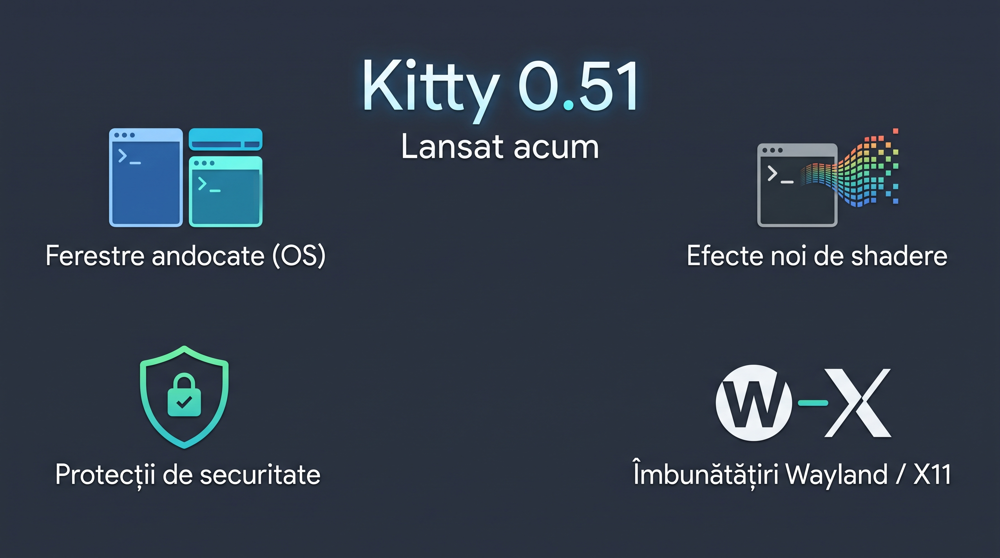

Kitty 0.51 a fost lansat: Ferestre andocate la nivel de fereastră OS, efecte noi de shadere, protecții de securitate și îmbunătățiri Wayland/X11

Emulatorul de terminal accelerat GPU Kitty a primit versiunea 0.51, la doar două săptămâni după ediția 0.50. Actualizarea extinde funcționalitatea ferestrelor andocate (docked windows), adaugă noi efecte vizuale bazate pe shadere, simplifică lucrul cu containere și remediază o serie de vulnerabilități de securitate și probleme de randare.
1. Ferestre andocate la nivel de OS (os-window-dock), shadere și containere
Andocare persistentă între tab-uri (
launch --type=os-window-dock): Utilizatorii pot atașa acum ferestre de terminal direct la marginea unei ferestre a sistemului de operare, sub bara de tab-uri. Spre deosebire de andocările atașate tab-urilor individuale, acestea rămân vizibile indiferent de tab-ul activ și pot fi redimensionate prin tragerea marginii interioare, fiind ideale pentru instrumente de monitorizare sau panouri de stare persistente.Efecte noi de shadere și evenimente: Sistemul de shadere personalizate introduce efecte de tip screen-shake (care animă fereastra la declanșarea alertei bell), precum și evenimente și variabile uniform noi care detectează pornirea/oprirea comenzilor sau intrarea/ieșirea din ecranul alternativ (alternate screen).
Integrare pentru containere (
launch_wrapper.py): Dezvoltatorii care lucrează în containere pot plasa un scriptlaunch_wrapper.pyîn directorul de configurare Kitty pentru a personaliza modul în care sunt pornite programele în ferestrele noi (de exemplu, lansarea lor automată în același container cu terminalul de origine).Evenimente extinse pentru Window Watchers: Funcția
on_closeraportează acum motivul închiderii unei ferestre, iar noul evenimenton_cwd_changedetectează schimbarea directorului curent de lucru.
2. Remedieri de securitate: Fișiere speciale, SSH și injecție de coduri escape
Kitty 0.51 abordează mai multe probleme critice de stabilitate și securitate:
Blocarea citirii fișierelor speciale ca logo/fundal: S-a remediat o problemă prin care o aplicație din terminal putea bloca emulatorul setând logo-ul ferestrei către un fișier special (precum
/dev/zero); imaginile de fundal și logo-urile trebuie să facă referire exclusiv la fișiere obișnuite.Permisiuni securizate în SSH kitten: Utilitarul SSH nu mai creează directoare pe serverele la distanță (inclusiv
~/.terminfo) cu permisiuni de scriere pentru toți utilizatorii (world-writable).Protecție în
choose-files: Instrumentul integrat de selecție a fișierelor primește protecții suplimentare împotriva injecției de coduri escape de terminal prin nume de fișiere, conținutul arhivelor, metadate eBook și previzualizări, eliminând totodată blocajele la previzualizarea fișierelor speciale.
3. Gestionarea sesiunilor, randare și îmbunătățiri Linux (Wayland și X11)
Sesiuni și randare stabilă: Mutarea tab-urilor sau a ferestrelor prin drag-and-drop ori detașare (detach) nu mai duce la pierderea sesiunii asociate, iar acțiunea
save_as_sessionevită suprascrierea accidentală a fișierelor de sesiune cu conținut gol. De asemenea, au fost corectate actualizările întârziate ale ecranului, săriturile din scrollback, sincronizarea imaginilor/cursoarelor și crash-urile provocate de secvențe complexe de emoji sau caractere multi-linie.Optimizări Linux (Wayland și X11): Pe Wayland, Kitty suportă acum interacțiunea prin ecran tactil (touchscreen) cu decorațiunile de fereastră client-side și remediază un blocaj (hang) care apărea la conectarea și deconectarea rapidă a monitoarelor. Pe X11, erorile legate de clipboard sunt raportate fără a închide brusc emulatorul de terminal.